Email Us
Please send us an email, we would love to hear from you!

We took residential roads out of the town of Pahrump which resulted in some abrupt turnarounds. Apparently Google Maps has map data for all of the proposed residential roads on the outskirts of Pahrump. We found that much of this is still remaining development. We would be biking on a street that Google says continued straight but it would suddenly dead end and we would have to find another option. Annette was looking at my navigating skills with suspicion but eventually we made it back to the main highway. It was a slow gradual climb into our next state, California. There was quite a bit of traffic on this road, more than we were used to at least. After a climb around the corner we had a glorious downhill into another wide valley. We stopped for lunch before the next climb out of this valley, and resumed it after lunch. It was short and brief and at the top we were rewarded with a rock formation described as a comet impact. In the rock cut for the highway pass is a very black streak of rock. Apparently the rock has been analyzed and its type has never been figured out. I’m not sure that much effort has been put into this, but it was interesting to look at and poke. The rock was jet black almost like glass but felt almost like plastic and pieces would crumble into dust if you squeezed them in your hand.
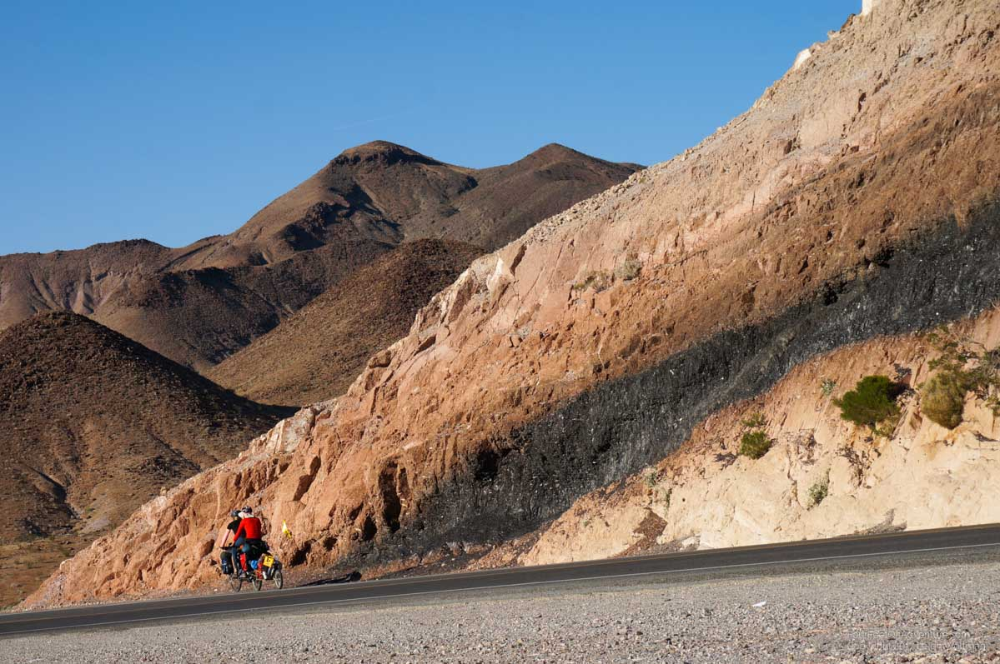
We had another downhill run into the village of Shoshone which would be our last water stop before the long crossing into the bottom of Death Valley. We decided to camp at the top and save the downhill for the morning. We camped just beyond the reach of the highway headlights shielded by a little ridge in the desert.
Our quick downhill to Shoshone was interrupted by the airfield. We watched a group of recreational pilots take off after likely flying in on a little overnight tour. In Shoshone, we had a little trouble getting gas, Annette tried to get $1 approved but the grumpy gas attendant didn’t want to deal with it. A kind motorist interrupted and let us fill up 41 cents of gas before he resumed filling his car.
With a full tank of gas, the more important stock up was water. With approval of the museum attendant we filled up our water containers from a bathroom faucet. We had already been carrying an existing 10 litre bag of water, and in Las Vegas picked up a collapsible 20 litre container for which we would pack about 15 litres in. Along with our water bottles we had about 30 litres of water. This meant loading some more dry bags onto the front bicycle rack to the point that when we were done all the trailer was filled with was food and water. One last gulp each from the tap and we were off into the desert. The turnoff into Death Valley came quickly and we began the large hill that would take us up over the range forming one side of the valley. The sign saying ‘No services’ for 72 miles was expected but caused a little bit of anxiety as the mind quickly raced over a mental list of the provisions … would it be enough for the valley with the famous name?
For the rest of the day we slowly climbed, the previous valley expanding below us treated with a little downhill halfway through. A road cyclist passed us on the last uphill, she quickly asked where we were coming from and then continued to sprint by. We were used to cyclists stopping to talk to us by at least matching our slow pace for a little while, but apparently we were too slow for this person. A few hours from sunset we finally reached the summit of the pass and were greeted by a stiff wind. This normally wouldn’t have caused any surprise, but over our whole trip through the dessert we really haven’t had any wind, nothing more than a slight breeze, while nights have been absolutely dead calm. We added some jackets as we knew the downhill to come would be quite long!
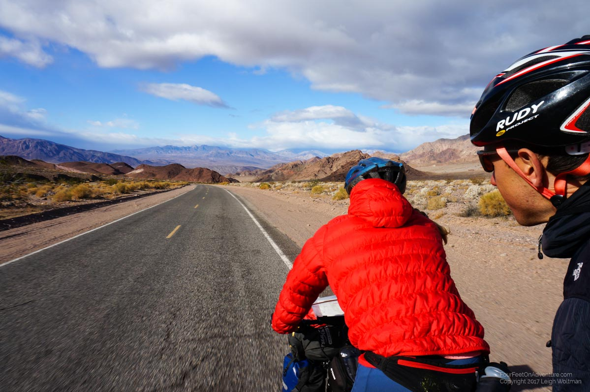
And long it was, we were descending to the bottom of the valley where we would essentially crawl up the valley. The most famous fact is that Badwater Basin is 82 meters below sea level, so at our elevation of almost 1000 meters we would have quite a decent. Downward we raced with only the shrill sound of squealing brakes breaking the sound of the wind as we rushed along at 60 km/h.
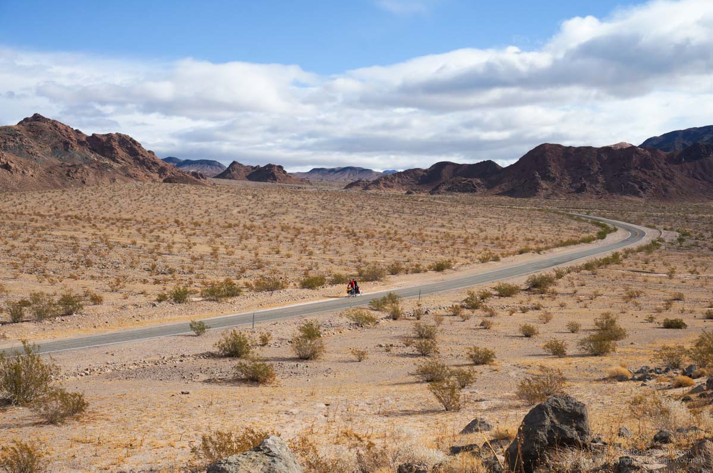
It was a gorgeous landscape, in the distance we could see the bottom of the valley and it looked a long way away.
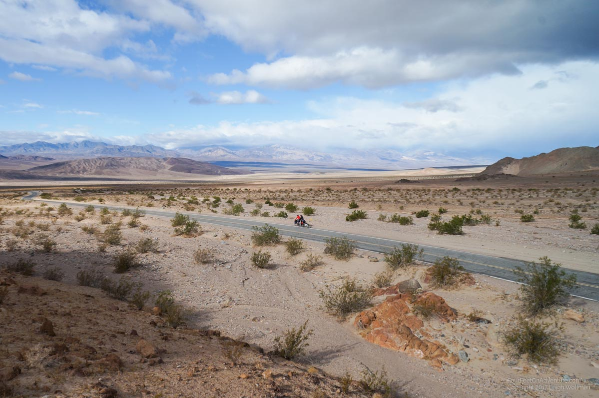
A little over halfway down we hit a little uphill over another small pass, which required pedaling again. Once finished we knew darkness was coming, and to the west were dark clouds.
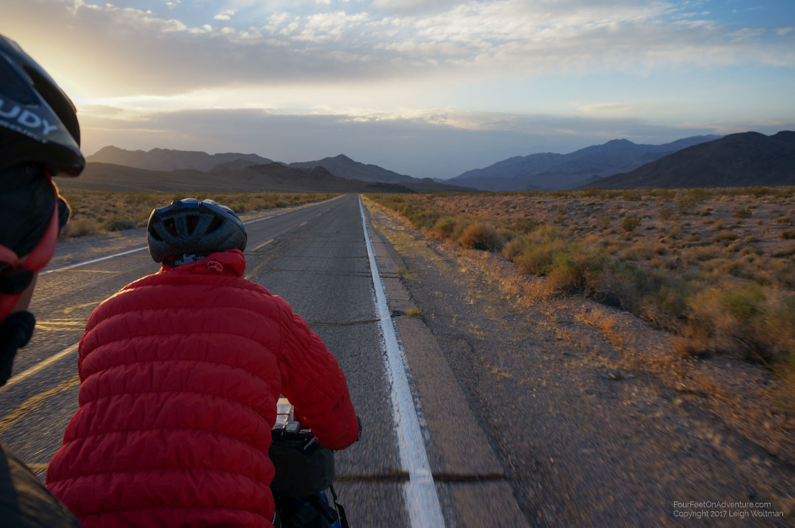
It almost looked like rain, but we thought, what are the chances of rain falling when we are in a place that gets less than 5 cm per year.
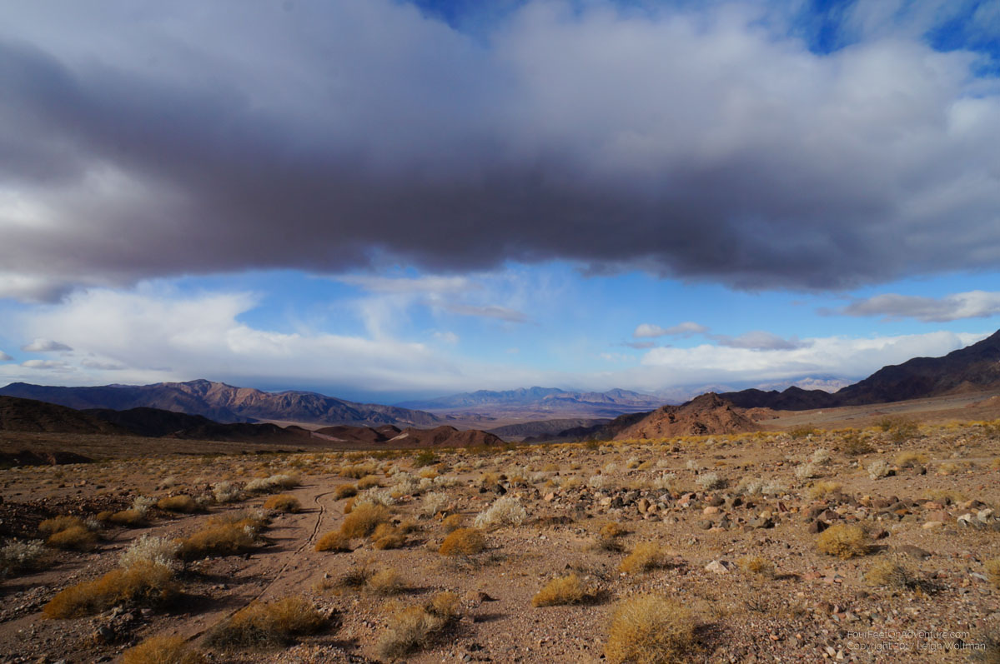
Shortly after the pass we saw a gravel road track leaving the paved highway, we turned off hoping to find a spot to camp, which we did, tucked just over a small ridge from the highway. The wind was picking up now, air rushing away from the front of clouds still looming forward and causing a premature sunset. However, after setting up and cleaning up diner the wind for the most part died.
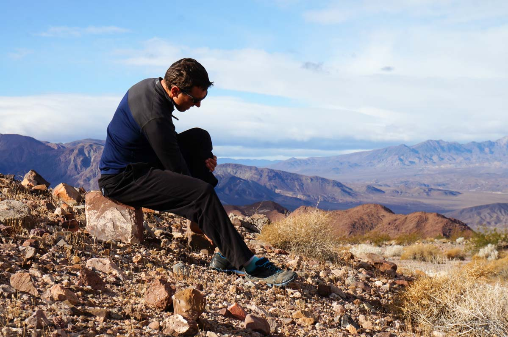
The next morning we resumed our downhill run all the way to the valley floor.
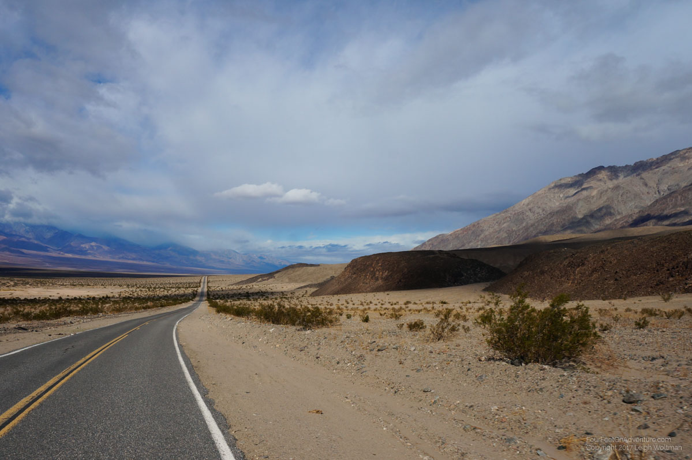
We could start to see evidence of a dried lake, as the bottom was dead flat and looked dried of mineral salts. The GPS confirmed we had dropped below sea level. Death Valley is unique because it is lowest point in North America which means all water would theoretically drain into it. However, it is a desert with an evaporation rate of 120 inches per year, so all the water that falls is gone. However, some water does collect in the bottom of the basin based upon seepage through the surrounding rock.
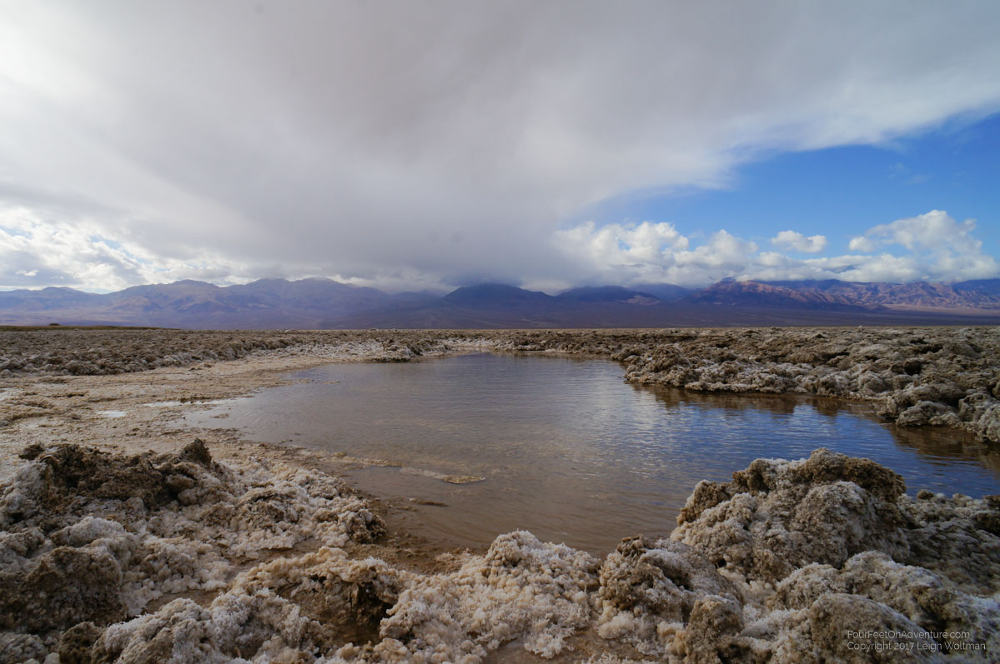
We would be riding along this dried lake to the north. The highway was pretty flat but we were greeted by a strong headwind. Again, an unfamiliar feeling. We pushed hard and made progress but not what we were used to. We stopped for a roadside interpretive sign and ahead on the side of the road was what looked like a medium sized dog. When a car occasionally passed it would sometimes get up but otherwise was just content to lie on the shoulder. We proceeded on the opposite side of the road with bear spray ready, and it did get up and move further away with our presence. However, it seemed really tame. It turned out to be our first coyote. We eventually saw another one in this same manner later in the day. The second one even had the nerve to follow us from a distance of 50 metres for a while.
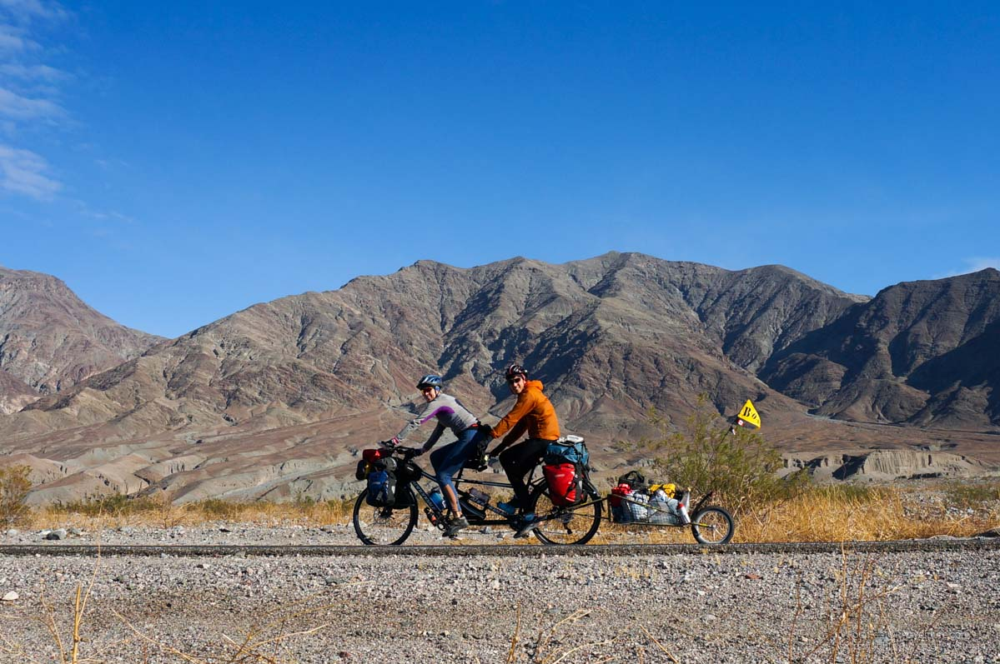
As the day wound down, we needed a place to camp. Since this is a national park we knew there would be restrictions on camping. So as soon as we spotted what looked like a little bit of a slot canyon in the mountain ridge about 200 metres from the road Annette went to investigate. It was promising, the slot canyon was full of gravel and turned quickly making it possible to be out of view of the highway. Since the alluvial fan we had to cross to get to it was quite rocky, we split up the bike and trailer. Then when the highway was clear we started lugging gear. At one point on a return trip we saw a car and both dropped to the ground. The rocky ground didn’t offer much cover so if the passengers weren’t looking at the salt lake they might have seen us looking ridiculous. The canyon was really nice and quiet.
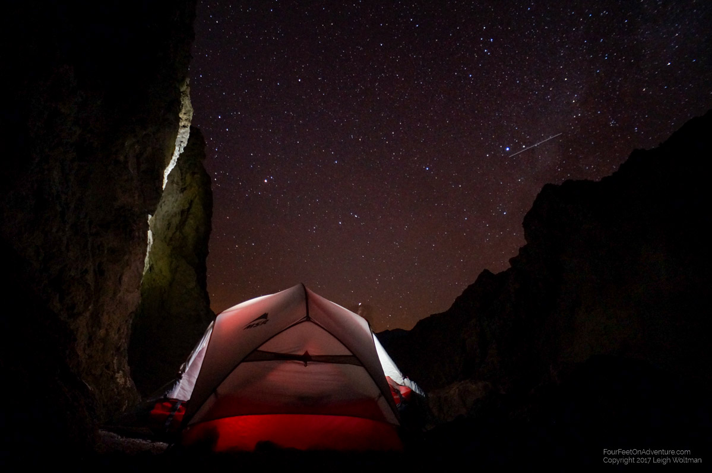
The next morning we started towards Badwater, the lowest point and the spot of a park attraction, the salt flats.
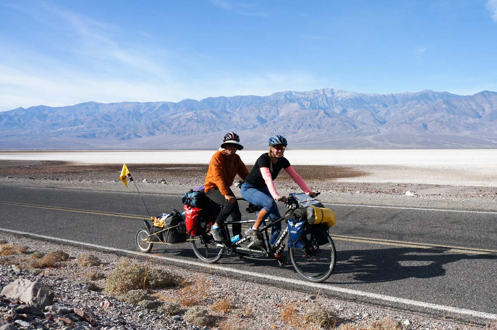
We went for a short walk on the salt and then cleaned the wet salt from our bicycle cleats.
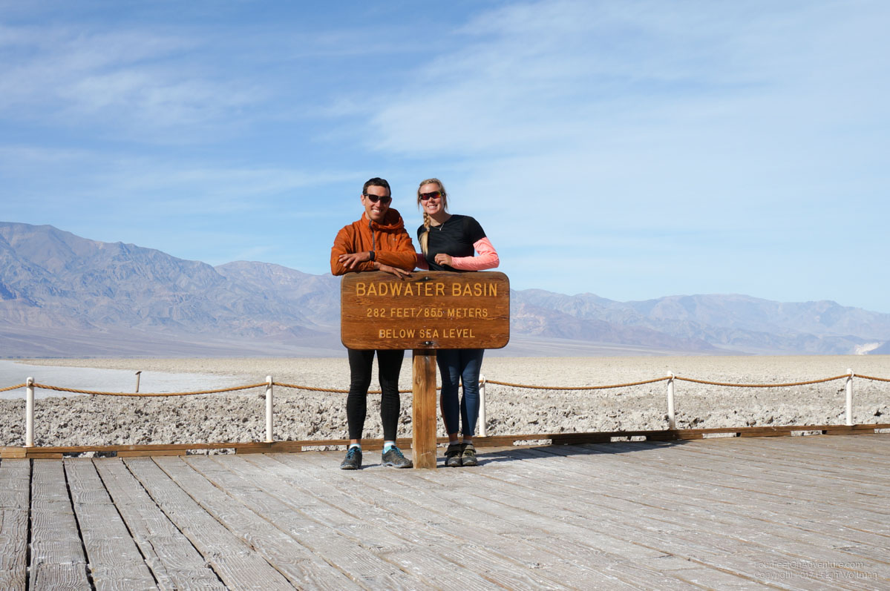
A road cyclist passed us in the opposite direction and even though we were all waves he ignored us. Along the way we passed artist drive which was a 15 kilometer scenic drive up into the mountain ridge bordering the highway. We decided to do it even though we knew it would be uphill. Over lunch we were passed by the same road cyclist again, who didn’t even glance our way … obviously he had other important priorities! We reasoned since it was a loop the elevation would all cancel out. It went up and up and up, probably a 300 metre climb at maybe a 10% grade. It was pretty with a couple sections of rock which are all coloured different colours of pastel giving the drive its name.
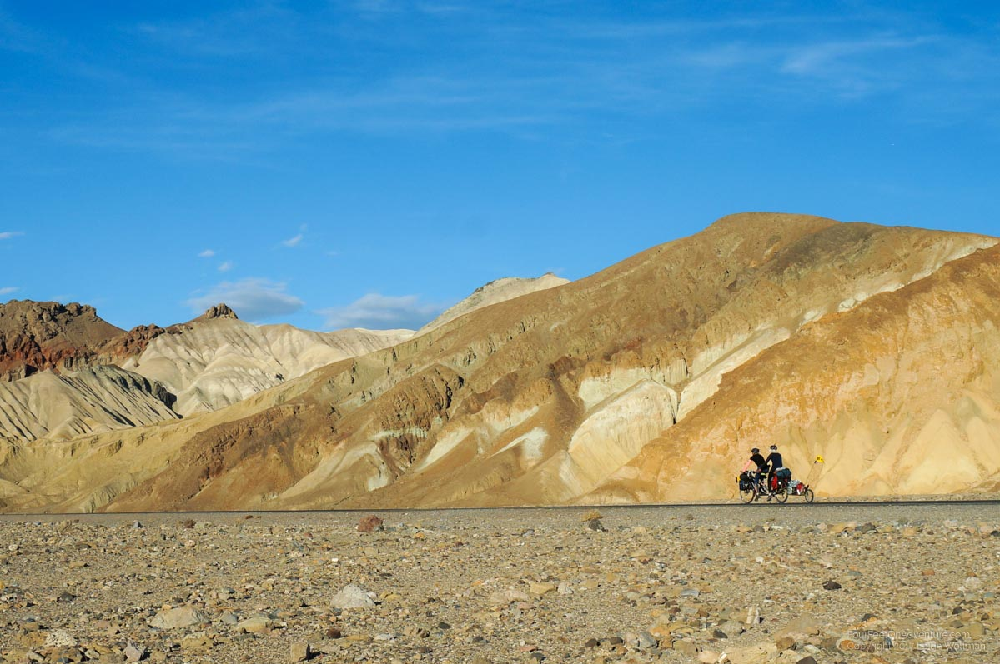
Eventually we made it to Furnace Creek, the hub in Death Valley. There we got a spot at the RV park attached to the resort. It was a little more but we got access to their showers and their spring fed pool. We stayed for 5 nights in total resting up. Annette went on a few day hikes. We explored the visitor center and did swim in the pool which was somewhat warm from the spring temperature. However, the only groceries were from a little general store attached to the resort. We were shocked by the prices but we're kind of stuck for options. Eventually after a couple days we learned what were the best deals. The fresh vegetables they had were pretty crazy priced, we ended up buying some baby sized potatoes for 39 cents each! One day, we saw sweet potatoes, full sized, for only 59 cents each, we quickly bought 3 and later in the day I noticed the price had risen to $1.99 each. We were greeted to both the sight of roadrunners and another passing coyote who was not afraid of humans completing the classic cartoon.
Leaving Furnace creek we rode over the valley floor to Stovepipe Wells, another resort and campground. Along the way we stopped for lunch at Salt Creek where we took a boardwalk tour of the spring that in the winter and early summer houses a unique species of fish that lives in the spring. It was trapped there for thousands of years since the lake that used to flood the valley receded. We camped the night and then the next morning, bright and early went for a walk on the Mesquite sand dunes.
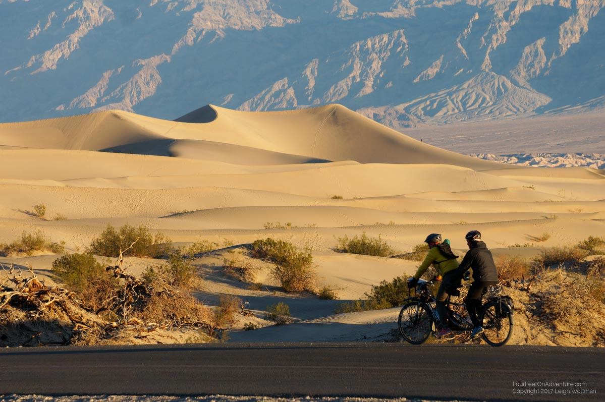
It was a beautiful walk and even better when we realized we should take our shoes off and just walk barefoot instead of continually filling our socks with sand.
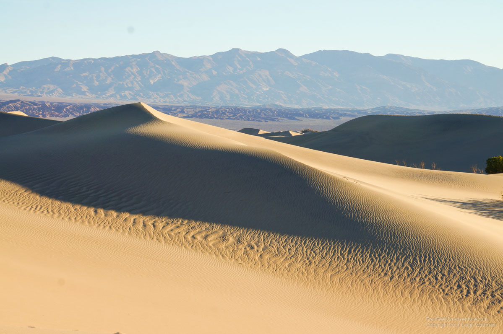
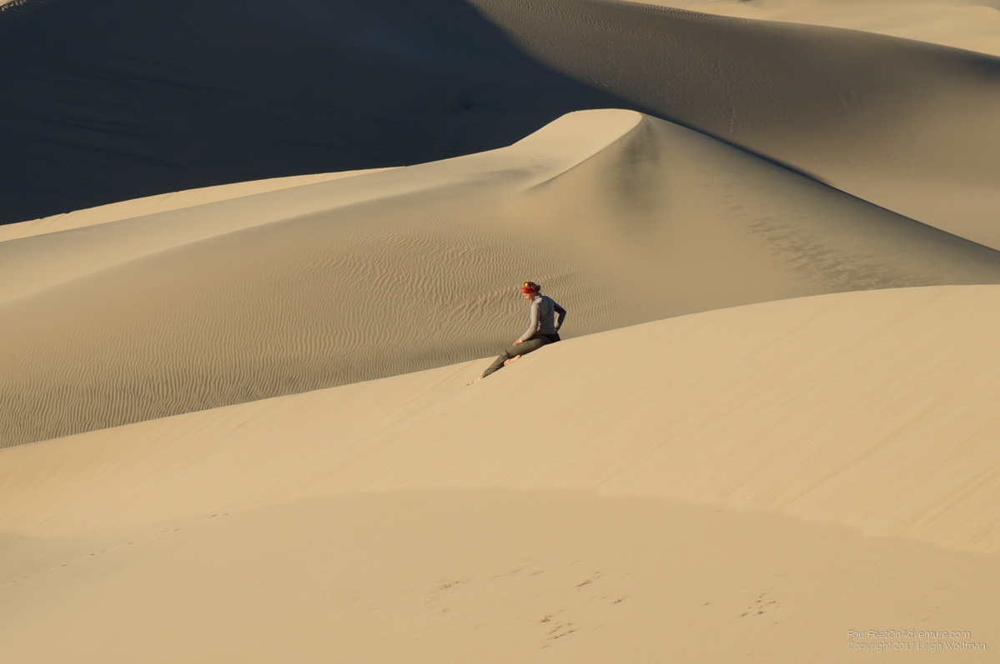
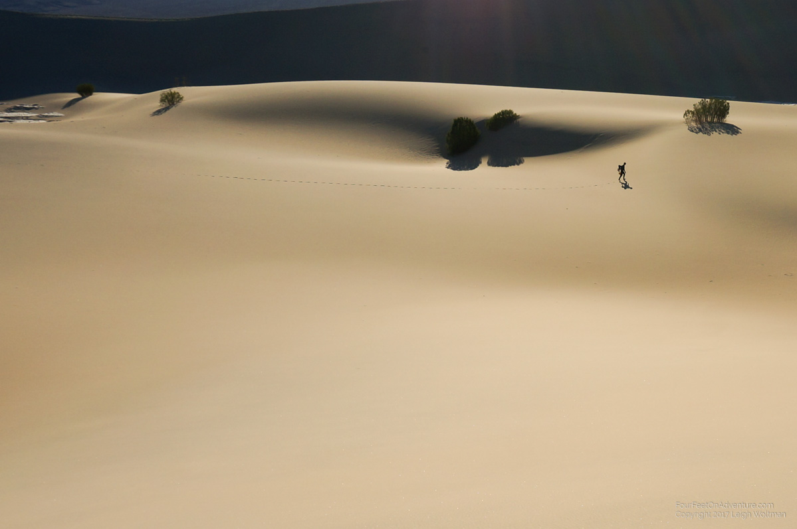
Later in the morning we biked up to Mosaic Canyon where we hiked some narrow sections of the canyon which had been carved out of solid marble. And eventually, in the early afternoon we started what we had been dreading for a while, the big climb out of Death Valley. The climb would take us up 1.5 kilometers in elevation. Our goal would be roughly halfway up to a free tent-only campground. As we started the highway stretched visibly up the massive hill in front of us. We could see the stretch of road leading to it that appeared downhill but this turned out to be an optical illusion because of the hills size, it turned out it would be uphill also. We laboured away slowly in the granny gear. Just after it started getting dusk we arrived at the campground, it was full. However, there was a group of cyclists who had a bit of empty space in one of their sites so they let us join.
The group of cyclists were all around 60 years of age, men except for one who brought his partner. They do a 8-10 day cycling trip in Death Valley every fall and they were on there way to another campground higher up another pass before turning around and doing another road in the valley later.
The next morning we again trudged up, pedaling for 20 minutes and then stopping for 10. We definitely needed a little candy bar every break to keep us going. The road averaged 6-8% in grade and definitely had a couple spots that were steeper. Eventually, in the early afternoon we hit the summit and prepared for the downhill by putting on jackets and rain pants. The downhill was fast and even steeper. We dropped almost 80% of the height gained into the next valley. Our brakes grew hot on the descent, with the rotors burning off any dust into a good smell. The descent always gives amazing views, but it is often disappointing to lose a lot of elevation that was so painfully gained since we are biking with such a heavy load.
We did have a good run into the Panamint Valley. At the bottom was a dried lake bed so we took the bike off the highway and rode along side across the hardened mud for a bit of an experience.
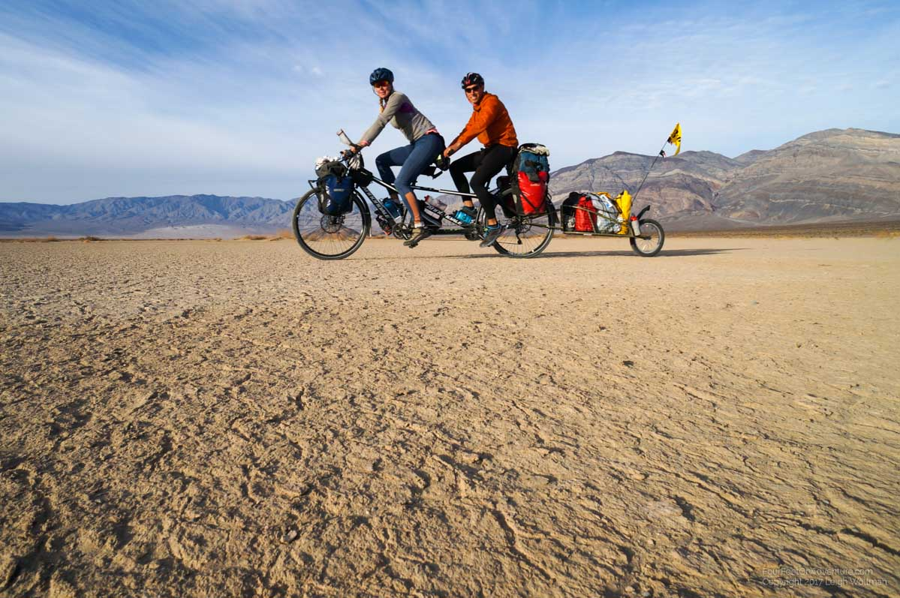
At the end of the valley we detoured a couple kilometers to a campground where we could get water for the next couple of days and a site for the night.
We opted for a buffet breakfast in the morning and gorged ourselves to a bit of a slow start in the morning. We continued our ride south along the floor of the valley with the occasional navy fighter jet flying low above us.
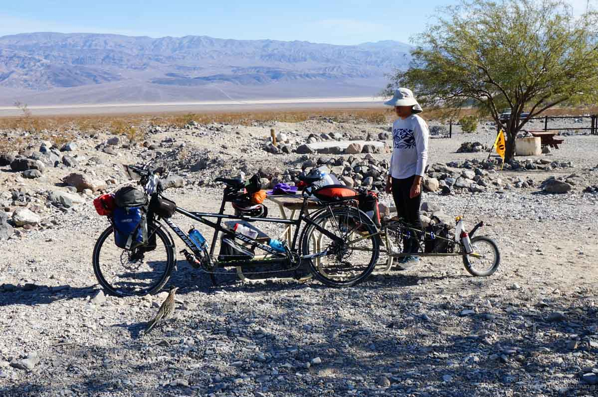
A major airbase is close now so they are obviously out training flying low and close to the mountains. We passed a highway warning sign for burrow crossings and did later see a wild donkey on the flats. Both tired we tucked away in a gravel wash for the night to leave the next climb out of this valley for the next day.
We awoke to a cold morning, water bottles weren’t frozen but they must have been close. We ate breakfast while fighter jets practised evasive maneuvers in the skies above. We made short work of the climb and reached the summit where we were pleased to see the descent was long and gradual meaning we would get maximum mileage of our elevation. We put jackets, gloves and hats on at the top expecting the 50 km/h we would be able to do for the next half hour.
We started the descent to head to the mining town of Trona which we could see the billowing smoke stakes in the distance. Shortly, we got up to speed which creates a lot of wind noise in the ears. During these downhills I’m frequently checking behind so we can move away from the shoulder a little which I thought I just did. But all of a sudden a sound screamed behind us, we both tensed rigid believing this was a vehicle about to hit us. But instead a fighter jet roared into our view passing right over us from the pass behind. It couldn’t have been more than 100 to 200 metres above us. We were less startled when it's wingman did the same thing at a little further distance several seconds later… what a fitting way to say goodbye to the Panamint valley.
We made good use of the gradual descent down to Trona, which turned out to be a very depressing town. The only major store was the dollar store and it has obviously seen the boom and bust cycles of the mining industry for its entire 100+ year life. On our way into town we stopped randomly on the side of the highway for a snack break, and after standing there for 2 minutes some dogs at the house 100 metres away noticed us. They started moving towards us and after we determined that the whole pack (6 dogs) were coming our way and there was no fence to stop them we quickly hopped on the bike and pedaled away. We started slowly but the dogs started down the highway and we had to pick up pace. About 500 metres away, they stopped and just stood on the highway we turned around the watch. We got the bear spray out and just planned to wait, hopefully they would find it fit to return to their home. After a minute, the dogs weren’t leaving and a old 1980’s white Cadillac passed us. As it got closed to the dogs it had to stop, and we saw it move to the shoulder. Then suddenly it floored it, and stopped again. The repeated 2 more times and we saw one dog limp off the highway. The Cadillac just sat there. It took us a moment to think he might be doing this service for us. We started to pedal and sure enough he sat there and waved us through driving between us and the dogs until we were out clear on the other side. We waved very much appreciative as he speed past us on his original itinerary, though of course we wished the dogs didn’t get hurt.
We took a hidden canyon as a campsite with potentially the sound of artillery testing in the distance. We used the next morning to get to Ridgecrest where we are shopping and planning our route forward. There was a RV park beside the fairgrounds that has one tent site, we will give it a try.
Please send us an email, we would love to hear from you!